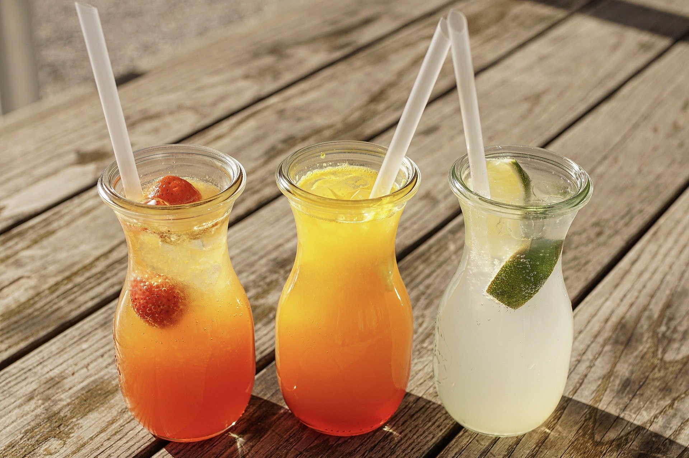

- 3 Rue des Gravières
- 86000 Grand Poitiers
- 1 Rue des Écoles
- 37150 Civray-de-Touraine
- 21 Avenue du Champ de Mars
- 17000 La Rochelle
- 37 Lotissement Parc de Cadouin
- 33370 Pompignac
- 27 Rue Antonin Dusserre
- 15130 Arpajon-sur-Cère
- 13 Rue du Chéry
- 63350 Maringues
Présentation :

L'histoire de la limonade
Dans les années 50, les enfants des états unis vendaient de la limonade faites maison pour 5 cents sur des stands devant chez eux pour se faire un peu d'argent de poche. Donc à cette époque une entreprise appelée « David’s Lemonade » s'est inspiré de cette tradition pour la répandre dans tout le pays, et celle-ci a rencontré un franc succès. Mais malheureusement de nos jours cette entreprise a disparu.Notre association
Combava regroupe différents producteurs d'agrumes tous indépendants et venants du sud de la France. Notre citronnade a pour but d'être une boisson saine qui permet avant tout de mettre en avant le goût de nos agrumes frais et bio que nous produisons localement, à l'instar de « David’s Lemonade » nous souhaitons promouvoir le fait-maison et le bio que nous ne nous retrouvons malheureusement pas dans les grandes chaînes de boissons. C’est donc pour vous faire découvrir notre boisson que nous avons décidé d'organiser des dégustations privées autour de tout le pays, lors de celle-ci nos producteurs adhérents seront présents pour vous présenter leurs produits et défendre leurs qualités. Si vous êtes un magasin à la recherche de producteurs ou alors juste une personne à la recherche de bons produits n'hésitez pas à venir vous inscrire pour une de nos dégustations chez nos magasins partenaires ou des associations locales. Vous trouverez toutes les informations nécessaires ci-dessous, et si vous souhaitez plus d'informations sur notre association n'hésitez pas à aller voir notre site Combava.comListe Evènements :

Formulaire d'inscription :